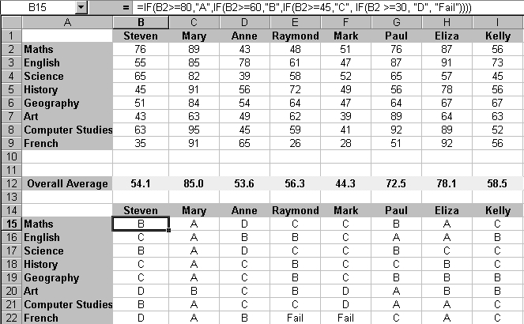

Free
computer Tutorials
|
Free
computer Tutorials
|
|
 HOME
HOME
|
Stay at Home and Learn | |||||
Conditional Formatting in Excel
If statements in spreadsheets can be very long and complicated. Consider this problem. You have a spreadsheet of student exam marks. Suppose you want to add the grades as well. If the student scored above 80 it's an A; if the student scored between 60 and 79, it's a B; if the student scored between 45 and 59, it's a C; if the student scored between 30 and 44, it's a D; and if the student scored less than 30, it's Fail. The question is, what does your IF statement look like? Well, it might look like this: =IF(B2>=80, "A", IF(B2>=60,
"B", IF(B2>=45, "C",
IF(B2 >=30, "D", "Fail"))))
What the IF statement is doing is nesting another IF statement on the False condition. So it says, "If B2 is greater than or equal to 80 THEN put an A in cell B15; if it's not, execute another IF statement." But don't worry if that long IF statement is making your brain hurt
- it is quite complicated! However, we'll use that long IF statement to explore Conditional Formatting. You'll be glad to know that there is a spreadsheet already prepared for you, for this lesson. So right click the link below and save the spreadsheet to your own computer. Download the Spreadsheet for this lesson Open up the spreadsheet you've just downloaded, and take a look at it. It should be this one:  It looks a bit hard to follow at the moment. It's difficult to know what the data is supposed to represent. Conditional formatting will help to clarify things. Conditional FormattingWe can use Conditional logic, however, to format the spreadsheet. What we'll do is to colour those Overall Averages depending on the grade. One colour will represent a high grade, a second colour will mean an average grade, and a third colour will mean a low grade. So let's get started.
At the top, it says Condition 1, and there are 4 text boxes to fill in. The first two "Cell Value Is" and "Between" will suit our purposes, so:
You can now set the colour to use for this condition. So click the
Format button. Another dialogue box appears. From the Patterns
Tab Strip, select a colour or pattern to use. Then click the OK
button at the bottom. Your dialogue box will look something like the
one below: You can now add a second condition. To do that, click the Add button at the bottom of the dialogue box. Condition 2 will appear. Repeat the above process: enter some numbers for the middle set of grade (65 to 79, perhaps), and select a different colour by clicking the Format button. Add a third condition for the lowest grades. When you're done, click the OK button. Your Overall Averages should change colour depending on what grade the student got. (Unfortunately, Excel only allows you a maximum of 3 conditions.) Your spreadsheet might look something like the one in the next image:
The conditional formatting allows you to see at a glance which students are doing well, and which are doing badly. Poor Mark!
ExerciseFormat the Student Grades so that your spreadsheet looks like the one below (you can use different colours, if you like).
In the spreadsheet above, you can now see more easily who's doing well and who isn't. In the next section, we'll take a look at CountIF. Again, we'll use the student spreadsheet. <--Back to the Excel Contents Page
|
||||||
|